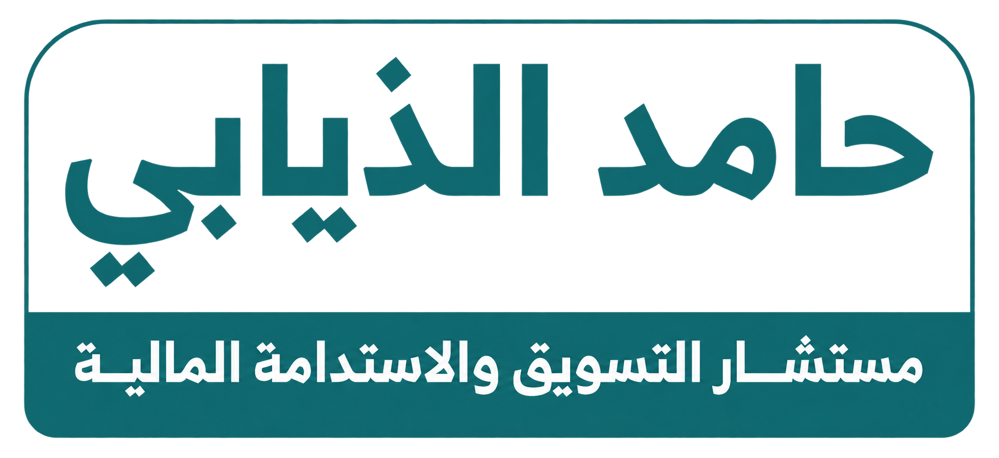

الحملة أم البرنامج المستمر؟
الفرق يظهر في خط الدخل على مدار العام
VS
الحملة
الدخل
دفعة ثم هبوط
التخطيط
من حملة إلى أخرى
المتبرع
عطاء لمرة واحدة
البرنامج المستمر
الدخل
يتكرر كل شهر
التخطيط
أوضح واستجابة أسرع
المتبرع
التزام طويل الأمد
حوّل متبرع الحملة إلى داعم شهري